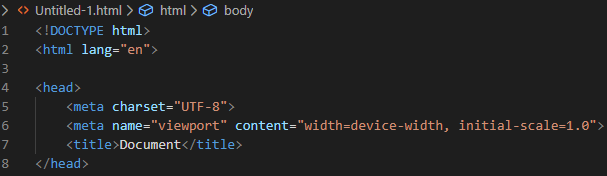
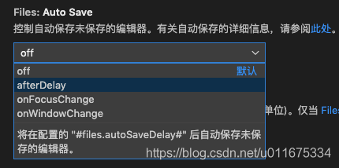

VSCode 设置代码自动保存
--------------test------------
搜索框内输入 auto save 看到第一个即是我们需要的功能，VSCode 有几个不同的设置方式：1）默认设置 off ，不自动保存：2）afterDelay —— 将在配置的
"#files.autoSaveDelay#" 后自动保存为保存的编辑器：
或者如下图操作： file==>preferences==>settings==>在搜索框里输入format==>点击formatting==>根据需要勾选，这里我三个都勾上
VSCode 界面左下角点击设置：
站在巨人的肩膀上1 2021年2月20日10:28:19
我是加粗的文字
我是加粗的文字
我是倾斜的文字
我是倾斜的文字
我是删除线
我是删除线
我是下划线
我是下划线
div标签独占一行，div标签独占一行（=大盒子）
div标签独占一行，div标签独占一行
一行上可以多个(=小盒子)
一行上可以多个(=小盒子)
一行上可以多个(=小盒子)
图片标签测试

alt 替换文本 图像显示不出来的时候用文字替换:

title 提示文本 鼠标放到图像上,提示的文字:


绝对路径：是指目录下的绝对位置，直接到达目标位置，通常是从盘符开始的路径。
例如，“D:\web\img\logo.gif”或完整的网络地址“http://www.itcast.cn/images/logo.gif”